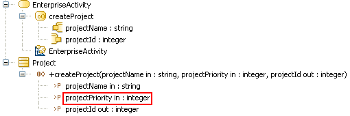

R1140¶
Summary¶
Pins of the CallOperationAction do not match the operations parameters.
Details¶
UML constraints:
- The number of argument pins and the number of owned parameters of type in and in-out belonging to the operation must be equal.
- The number of result pins and the number of owned parameters of type return, out, and in-out belonging to the operation must be equal.
Example:

The createProject CallOperationAction is invalid, because the projectPriority
parameter of the createProject operation that it calls is not matched to one
of its pins.
Tips¶
When you get a R1140 warning on a CallOperationAction you can resolve it by
doing one of the following:
- Remove any unmatched parameters from the called operation or match it to an unmatched pin of the calling action.
- Remove any unmatched pins from the calling action or match it with any unmatched parameter of the called operation.